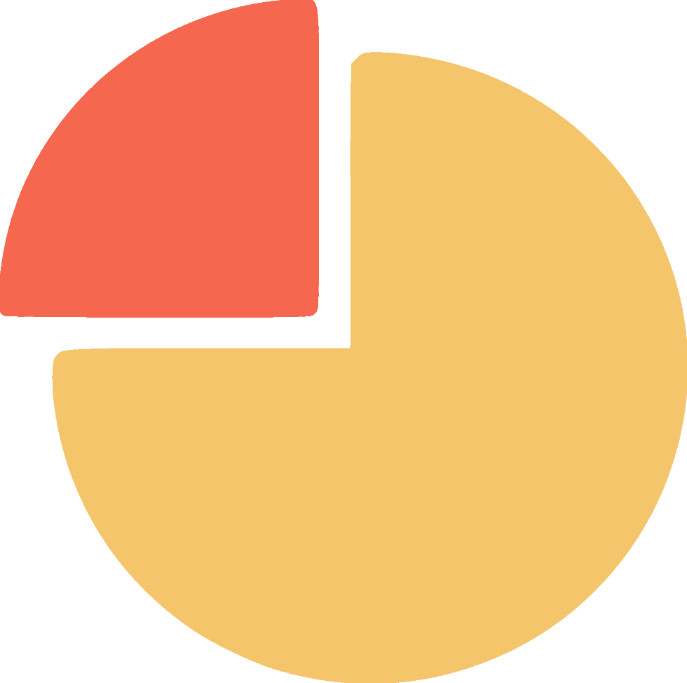
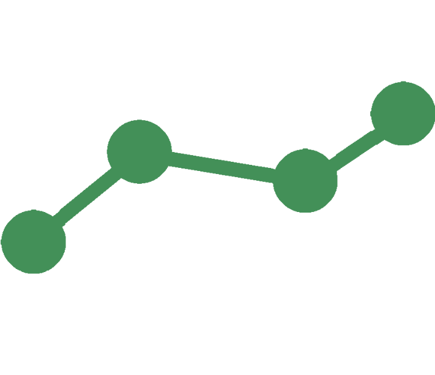

<mat-form-field appearance="fill">
  <mat-label>Select an option</mat-label>
  <mat-select (selectionChange)="recupCaisse()" [(value)]="selected">
    <mat-option value="All">All</mat-option>
    <mat-option   *ngFor="let caisse of caisses; let i = index" value="{{caisse}}">{{caisse}}</mat-option>
  </mat-select>
</mat-form-field>


<div class="card-container" id="home">
  <a class="card" routerLink="/call_hours">
    <h3> Nombre d'appels  par journée :</h3>
    <h1 id="nb-appel">{{nbCall}}</h1>
  </a>
  <a class="card" >
    <h3>Temps d'attente moyen d'un appel :</h3>
    <h1>{{averageCall}} s</h1>
  </a>
</div>

<div class="card-container" >
  <a class="card" routerLink="/cause_fin_dappel">
    <span>Cause de fin d'appel</span>
    
  </a>


  <a class="card" routerLink="/statut_appel">
    <span>Statut d'appel</span>
    <div>
      
      <div>
        <div>
          <h3>COM : </h3>
          <h3>{{percentageCom}}</h3>
        </div>
        <div>
          <h3>Autre : </h3>
          <h3>{{percentageOther}}</h3>
        </div>
      </div>
  </div>
  </a>
</div>
<div class="card-container">
  <a class="card" routerLink="/partnair_call">
    <span>Cheminement d'un partenaire</span>
    
  </a>
</div>
